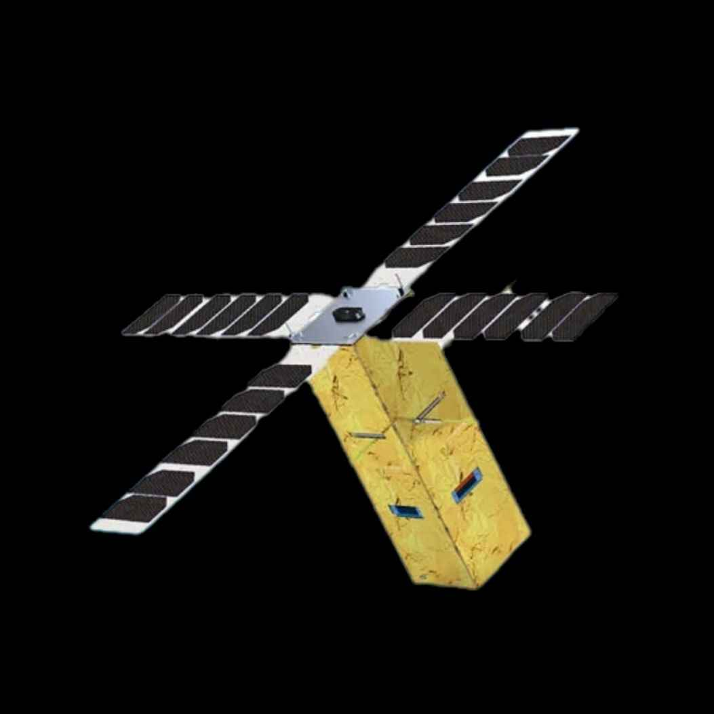

|
À quoi serviront les premiers
satellites universitaires du Maroc ?
|
 |
|
Le Maroc a lancé ses deux premiers satellites universitaires, "UM5-EOSat" et "UM5-Ribat",
le 16 août 2024, via la fusée Falcon 9 de SpaceX. Ces satellites, développés en collaboration
avec l’Université Mohammed V de Rabat, ont des missions de communication et de surveillance,
comme la localisation des avions et des navires, ainsi que la collecte de données.
De plus, ils sont dotés de technologies reprogrammables en orbite.
|